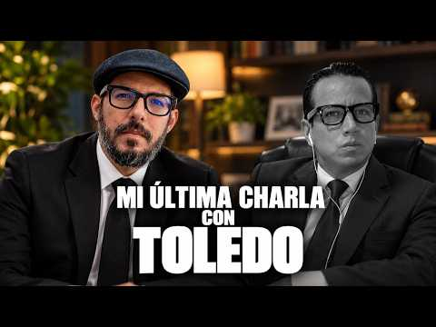
28 oct 2026 · Boscán y La Moni hacen pública la última conversación con Toledo
 123
123Leonardo Toledo sabía que lo iban a matar. Semanas antes les pidió a Andersson Boscán y Mónica Velásquez que grabaran su última conversación y al día siguiente les entregó cuatro videos y dos audios con una sola instrucción: guardarlos y abrirlos si a él le pasaba algo. El 27 de octubre de 2026 lo emboscaron en Guayaquil. Dentro del material estaba el alcalde de Naranjal, Juan Carlos Rivera, admitiendo en un cuarto que en su municipio no manda él, que al financiero y al jurídico les ponen una pistola en la cabeza. La grabación salió al aire el 29. Cinco horas después, el movimiento del presidente le soltó la mano.
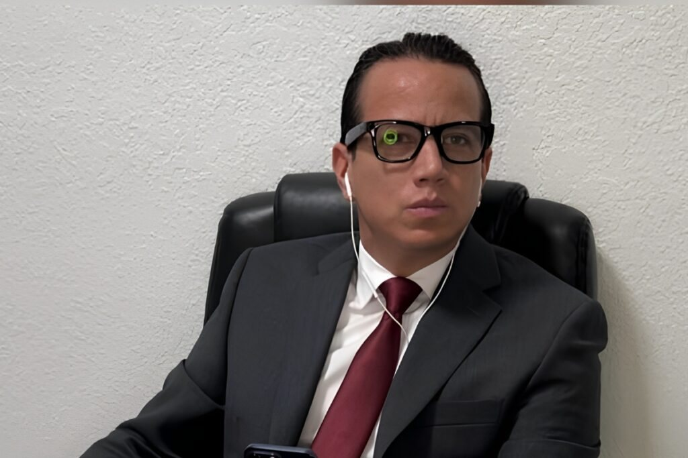
ToledoLeonardo Toledo Torres era abogado penalista en Guayaquil. Se había hecho conocido por defender a Mayra Salazar en el caso Metástasis: fue él quien diseñó su salida como cooperadora eficaz y negoció con la Fiscalía. En los últimos meses llevaba la defensa de Leonardo Cortázar, preso en la cárcel del Encuentro, y se preparaba para entregar ante un juez dispositivos con grabaciones que, según Boscán y La Moni, vinculaban a mucha gente con la corrupción y el narcotráfico.
Toledo llamó varias veces a Boscán y La Moni. La última, porque sentía que lo podían quebrar, en esas palabras. Nunca se vieron en persona. Les pidió que grabaran esa conversación y que la sostuvieran en privado. Al día siguiente les entregó cuatro videos y dos audios. La instrucción fue la de un seguro de vida: guardarlos y, si algo pasaba, prestarles atención. Lo que tenía sobre el caso Encuentro no se lo dio; les dijo que no se iban a resistir a la tentación de publicarlo.
Guardar. Abrir solo si me pasa algo.
La instrucción y el contenido, según los contaron en el programa del 28 de octubre de 2026. El sobre es una representación gráfica: el material se entregó en archivos digitales.
Entre ser un buen periodista y ser una buena persona, al final uno tiene que escoger siempre ser una buena persona.
Andersson Boscán, al aire, 28 de octubre de 2026
Boscán y La Moni guardaron el material sin verlo. Lo abrieron el martes 27 de octubre de 2026, el día en que mataron a Toledo. En el programa del día siguiente, Boscán explicó por qué no lo habían contado antes: haberlo publicado tres semanas atrás habría podido adelantar la decisión de acabar con él. Esa mañana hicieron pública la última conversación. El jueves 29 mostraron lo que había en los videos. Era la historia de un alcalde.
En la madrugada del 27 de octubre un sedán llegó a una casa de Sauces, al norte de Guayaquil. Bajaron por lo menos cinco hombres vestidos con chalecos y chaquetas de la Policía y de las Fuerzas Armadas, armados y con herramientas para tumbar puertas. Fingieron un allanamiento. Adentro no buscaban solo a una persona: abrieron cajones. Según la reconstrucción que hicieron Boscán y La Moni en su programa, buscaban algo, quizá una computadora o un teléfono.
Era la casa equivocada. Toledo, convencido de que alguien iba por él, dormía en otro lugar y estacionaba su auto lejos de donde pasaba la noche. Los vecinos llamaron a la Policía. Hubo una persecución de madrugada detrás del auto rojo de los falsos policías: sus ocupantes se dispersaron y uno de ellos terminó acorralado en una casa y detenido.
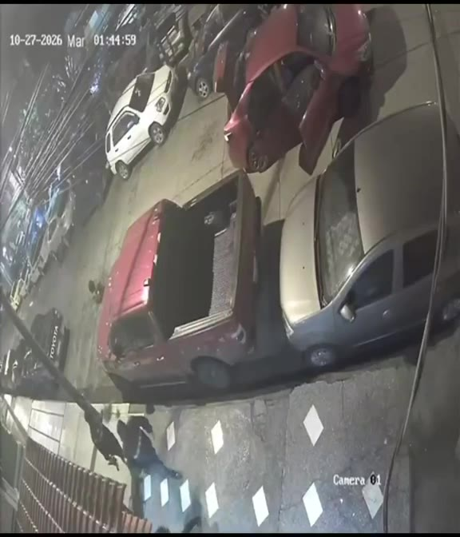
Cam 0127-10-2026 · 01:44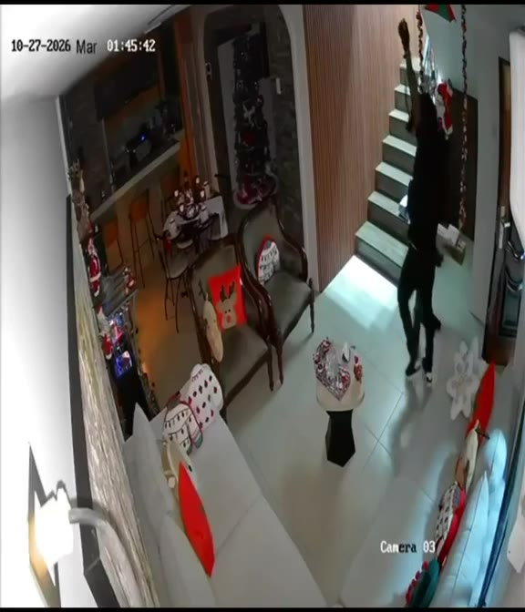
Cam 0327-10-2026 · 01:45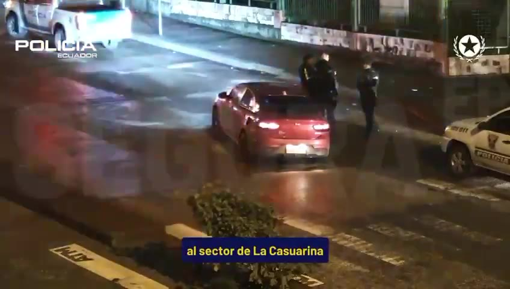
Policía · SEGURA EPLa CasuarinaCerca de las nueve de la mañana, Toledo salió a buscar su auto sin saber que había servido de señuelo. Al menos uno de los sicarios se había quedado en la zona esperando que volviera por él. Toledo vio el arma, intentó refugiarse y cayó en mitad de la calzada. El atacante huyó. La Policía no ha informado quién lo mandó a matar ni por qué. Al abogado le faltaba el teléfono, y una de las hipótesis es que buscaban lo que se disponía a entregar ante un juez en cuatro semanas.
A Cortázar le llevaron la noticia a la cárcel cerca del mediodía. Según contó Boscán, lloró y pidió una sola cosa: que no permitieran que lo mataran.
Gustavo Santana Ortega fue asesinado el 30 de octubre de 2024 en una gasolinera de Naranjal, junto a dos personas más, por un grupo de hombres armados con pistolas y fusiles que llegó en dos camionetas. Según una fuente policial citada por Expreso, había recibido amenazas y tenía un historial relacionado con actividades ilícitas. Boscán lo describe como un hombre acusado de narcotráfico, cercano a Los Choneros en la pugna por el control del cantón.
Su hijo quedó a cargo de las haciendas. Hace unos meses buscó a Toledo con un problema de tierras: la alcaldía había movido el catastro de una finca rural de la familia y había cambiado su ficha registral sin notificarle. Toledo le dijo que para probar lo que pasaba en el municipio necesitaba una grabación. El hijo de Santana fue a ver al alcalde Juan Carlos Rivera, se sentó con él en un cuarto desordenado y dejó el teléfono grabando en el bolsillo.
No mando. Yo mando, pero me le ponen al financiero la pistola en la cabeza. Le ponen la pistola en la cabeza al jurídico.
Juan Carlos Rivera, alcalde de Naranjal, en la grabación hecha por el hijo de Gustavo Santana
El alcalde primero intenta lavarse las manos: dice que el trámite de la finca pasó por la administración y que lo mandaron a catastro y a jurídico. Cuando el hijo de Santana le reclama que eso sale de sus manos, Rivera responde que no manda. Habla de funcionarios que se fueron porque los querían matar. El hijo de Santana pone el apellido sobre la mesa: los Ochoa. Le dice que como alcalde puede llamar al ministerio y denunciar que los Ochoa están manejando todo, y que él mismo lo lleva ante el ministro del Interior. El alcalde contesta que no puede decir nada.
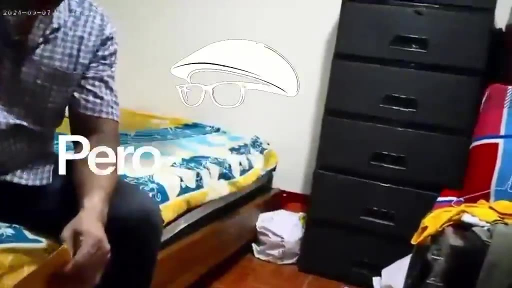
Grabación01:08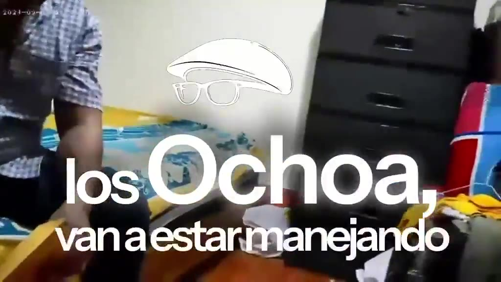
Grabación01:28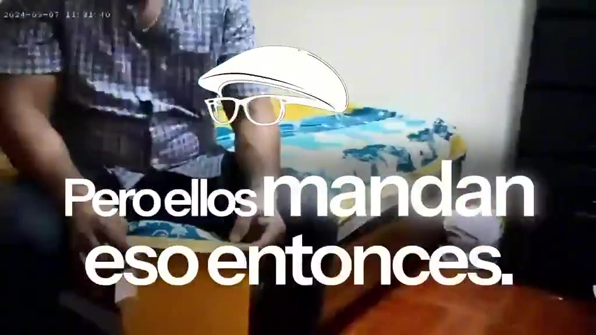
Grabación04:20Eso es la alcaldía, eso es la administración. Eso le mandamos a jurídico.
Lo quiero, lo aprecio, con mi papito Gustavo Santana.
No mando. Yo mando, pero me le ponen al financiero la pistola en la cabeza. Le ponen la pistola en la cabeza al jurídico.
Se fue porque la querían matar.
Pero usted como alcalde puede llamar al ministerio y poner que los Ochoa van a estar manejando todo.
Usted siendo alcalde, yo lo llevo con el ministro. Son criminales, son delincuentes. No es posible que delincuentes estén manejando.
Es que yo no puedo decir algo.
Tira la ficha registral sin comunicarme. Dice que es al mando de los Ochoa.
Yo hago la cita con el ministro del Interior, nos sentamos y arreglamos. Deme la mano.
Mira que maten a este muchacho de sistemas, supuestamente para que no les copie. La misma arma que mata a la Carnero es la arma que mata a mi papá.
Se da un billete a los manes. Tú pones el precio.
Yo no voy a decir eso.
Fragmentos de la grabación completa de 9 minutos y 42 segundos que Andersson Boscán publicó en X el 29 de octubre de 2026. El minuto corresponde a esa grabación. La transcripción es automática, cotejada con la lectura que Boscán hizo al aire; las voces se identifican por el contexto de la conversación. Se omitieron un número de teléfono que se dicta en la grabación y el nombre de una funcionaria.
La grabación del narcoalcalde de Naranjal, Juan Carlos Rivera.
— @AnderssonBoscan Ver en X
Boscán dijo al aire que intentó contactar a Rivera por quince números de celular distintos y que ninguno respondió. Dejó su número público para que el alcalde dé su versión.
Cuando apareció el apellido Ochoa, Boscán y La Moni recurrieron a fuentes policiales y a sus notas. Según esas fuentes, los Ochoa son una familia de Naranjal que se presenta como empresarios prósperos y que tiene una alianza con Los Lobos. Naranjal es un punto de paso para la droga y para el oro de la minería ilegal. En 2023, cuando el cantón estaba partido en dos, Santana padre estaba del lado de Los Choneros y los Ochoa del lado de Los Lobos.
Ruta armada con lo que se dice en la grabación y lo que fuentes policiales contaron a Boscán y La Moni. Ninguna de estas afirmaciones ha sido confirmada por la Fiscalía.
Un policía les explicó cómo se hacen de tierras: llegan a la finca con un contrato de cesión de la propiedad, le ponen una pistola en la cabeza al dueño y el dueño firma. Si después quiere denunciar que lo obligaron, le muestran su firma. Así se habrían convertido en terratenientes. Es el mismo terreno en el que pelea el hijo de Santana: un catastro y una ficha registral que cambiaron sin que el dueño se enterara.
En la grabación, el hijo de Santana menciona dos muertes. La de un muchacho de sistemas del municipio, asesinado, dice, para que no copiara información: Franklin Osmani Torres Luna, que recibió al menos seis disparos el 9 de marzo de 2026 a las ocho de la mañana, frente a la iglesia. Y la de la concejala Diana Carnero, asesinada en febrero de 2024. Según el hijo de Santana, el arma que mató a Carnero es la misma que mató a su padre. Ninguna de esas afirmaciones ha sido confirmada por la Fiscalía.
La grabación también muestra al que graba. El hijo de Santana se presenta como millonario, dice que puede pagar seguridad privada y, en un tramo, le propone al alcalde arreglar con los Ochoa pagándoles: que les ofrezca dinero y que ellos pongan el precio. El alcalde le responde que él no va a decir eso. Boscán resumió lo que importa de los diez minutos: un alcalde que admite, ante un tercero, que el poder del municipio está en manos de otros.
La grabación salió al aire en la mañana del jueves 29 de octubre de 2026, en una semana en la que el Gobierno había declarado la guerra a los alcaldes vinculados al narcotráfico. El día anterior la Policía había capturado al alcalde de Vinces, Juan Alfonso Montalván, por lavado de activos. Boscán advirtió que era la primera vez que mostraba a un narcoalcalde del oficialismo. Sergio Peña, asambleísta aliado de ADN, dijo en el mismo programa que lo consideraba gravísimo y que haría llegar el video a las autoridades.
A las 11:57 Boscán publicó en X la grabación completa. Poco después de las dos de la tarde, ADN difundió un comunicado: retiraba su respaldo político al alcalde y empezaba su desafiliación. José Julio Neira lo compartió pidiendo que se investiguen todos los hechos.
El Movimiento Acción Democrática Nacional (ADN) retira su respaldo político al alcalde de Naranjal, Juan Carlos Rivera, y empieza de inmediato el procedimiento de desafiliación, conforme al Manual de Ética.
Por más amenazas que existan, la forma de cambiar este país es no ceder ante ellas. Nuestra lucha contra el narcotráfico y el crimen organizado es frontal y sin excepciones.
Estamos atentos a que los organismos de control correspondientes continúen con las investigaciones necesarias para esclarecer hechos y determinar responsabilidades. Si se comprueba la comisión de delitos, los involucrados deberán responder ante la justicia, sin privilegios ni interferencias.
En ADN no encubrimos a nadie. Nuestro compromiso con el Ecuador está por encima de cualquier nombre o cargo.
Rivera respondió con un video en sus redes. Lo llamó una campaña sucia y puerca, invitó a otras autoridades a visitar el municipio para que constaten que allí manda y trabaja Juan Carlos Rivera, y no se refirió al contenido de la grabación.
Rivera llegó a la alcaldía en 2023 con el movimiento CREO y después se acercó al oficialismo. Según Radio Pichincha, que revisó sus declaraciones juradas, su patrimonio neto bajó de 1.027.026 dólares en 2023 a 159.185 dólares en 2026, mientras sus deudas subieron en 441.105 dólares.
Juan Carlos Rivera gana la alcaldía de Naranjal con el movimiento CREO.
Asesinan a la concejala de Naranjal.
Lo asesinan en una gasolinera de Naranjal junto a dos personas más.
Asesinan a Franklin Torres Luna, funcionario del municipio, frente a la iglesia.
El hijo de Santana graba su conversación con el alcalde por consejo de Leonardo Toledo.
Toledo pide a Boscán y La Moni grabar su última conversación y les entrega cuatro videos y dos audios para abrir si le pasa algo.
Un grupo de falsos policías entra de madrugada a una casa equivocada; a las nueve de la mañana un sicario lo mata en Sauces 2.
Boscán y La Moni cuentan en su programa lo que Toledo les dijo y anuncian que su equipo revisa los videos.
Boscán y La Moni presentan la grabación en su programa; Boscán la publica completa en X.
El movimiento de gobierno retira su respaldo al alcalde e inicia su desafiliación.
Alcalde de Naranjal desde 2023. En la grabación dice que no manda y que amenazan con pistolas a sus funcionarios.
Grabó la conversación con el alcalde por un pleito de tierras. En la grabación propone pagarles a los Ochoa.
Abogado penalista. Dejó a Boscán y La Moni cuatro videos y dos audios con el pedido de abrirlos si lo mataban; entre ellos, la grabación del alcalde.
Familia de Naranjal que fuentes policiales describen como aliada de Los Lobos. El alcalde y el hijo de Santana los señalan en la grabación.
Padre del que graba. Asesinado en Naranjal en 2024.
Defendido de Toledo, preso en la cárcel del Encuentro. Al saber del crimen pidió que no permitieran que lo mataran.
En un video en sus redes calificó lo publicado como una campaña sucia y puerca e invitó a otras autoridades a visitar el municipio para que constaten que allí manda y trabaja él. No se refirió a la grabación. Boscán lo buscó en quince números de celular sin respuesta.
Retiró su respaldo político al alcalde e inició su desafiliación conforme a su Manual de Ética. Pidió a los organismos de control continuar las investigaciones.
Pidió en X que se investiguen todos los presuntos hechos y dijo que el movimiento del presidente no respaldará a quienes incumplan su Manual de Ética.
Dijo en el programa que es gravísimo que un alcalde acepte algo así y que haría llegar el video a las autoridades.

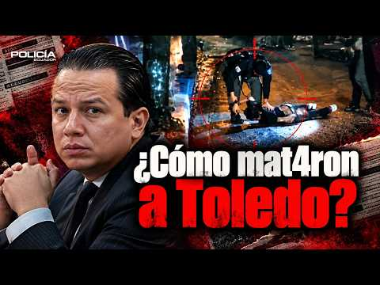
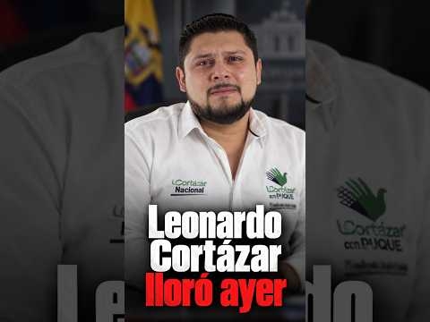
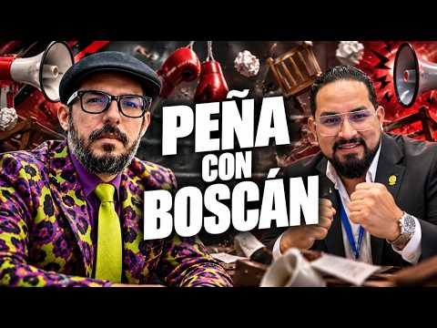
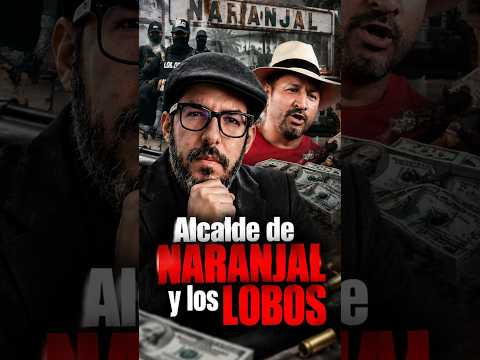
Sí. Leonardo Toledo me llamó un día porque tenía mucho miedo de que lo silenciaran. No fue hace mucho la última vez que hablamos. No hace mucho. De hecho, eh Toledo no solo tenía miedo, sino que tenía razones para tenerlo. Porque finalmente terminó pasando lo que él temía. Ayer a Leonardo Toledo, el abogado de Leonardo Cortázar, le reventaron la cabeza y lo dejaron tirado en mitad de la calle hasta que llegó criminal…
Leer la transcripción completaToledo saldrá de su casa y se acercará a su vehículo. Y finalmente, verán ustedes una imagen muy pixelada, por respeto, por supuesto, a ustedes y a la víctima, intentará escapar cuando siente que el hombre en la parte izquierda de la toma, justo al lado de la camioneta roja, ha sacado un arma. Él intenta buscar refugio, pero recibe los primeros impactos y queda tendido en el suelo, en mitad de la calzada, en mitad de…
Leer la transcripción completaLeonardo Cortázar lloró ayer cuando fueron a contarle a eso del mediodía que su abogado Leonardo Toledo había sido desvivido. Se lo contaron los militares que trabajaban para el crimen organizado y cobran por llevar y traer mensajes. Yo no sé si él lo quería mucho. Me supongo que no. se habían visto apenas en tres o cuatro videos de Zoom y no eran amigos antes de la huída de Cortáer que se produjo precisamente cuando…
Leer la transcripción completaLeonardo Cortázar lloró ayer cuando fueron a contarle a eso del mediodía que su abogado Leonardo Toledo había sido desvivido. Se lo contaron los militares que trabajaban para el crimen organizado y cobran por llevar y traer mensajes. Yo no sé si él lo quería mucho. Me supongo que no. se habían visto apenas en tres o cuatro videos de Zoom y no eran amigos antes de la huida de Cortáer que se produjo precisamente cuando…
Leer la transcripción completaRealmente que no es debido. Yo podría a la prensa salir todo eso ahí y es un escándalo terrible. Yo no puedo hacer Lo amenaza Santana con que él puede ir a la prensa porque esto es terrible y yo no termino de entender la historia eh pero está hablando de un catastro, una finca, una cosa que yo no entiendo. Eso usted es muy sí, pero escuche, pero eso de ahí que hicieron ilegal, ni siquiera me notifican, aparte que es …
Leer la transcripción completaTranscripciones de los subtítulos automáticos de cada programa. No están corregidas a mano: sirven para buscar una frase y llegar al minuto exacto del video, no como cita textual literal.
Boscán y La Moni hacen pública su última conversación con Toledo y anuncian que revisarán el material que el abogado les dejó.
Boscán y La Moni presentan la grabación en su programa y Boscán la publica completa en X a las 11:57.
Poco después de las dos de la tarde, el movimiento de gobierno retira su respaldo al alcalde e inicia su desafiliación.
Rivera habla de una campaña sucia y no responde a lo que dice en la grabación.
No se conocía una investigación de la Fiscalía ni un pronunciamiento del Ministerio del Interior sobre lo que dice la grabación.
El abogado Leonardo Toledo entregó a Boscán y La Moni cuatro videos y dos audios con el pedido de guardarlos y abrirlos si a él le pasaba algo; se publicaron tras su asesinato. La grabación del alcalde la hizo el hijo de Gustavo Santana. Las citas salen de una transcripción automática de la grabación completa, cotejada con la lectura que Boscán hizo al aire; las voces se identifican por el contexto. La reconstrucción del crimen de Toledo es la que Boscán hizo al aire con imágenes de cámaras de seguridad y de la Policía; la relación entre el video policial del auto rojo y el caso se basa en esa reconstrucción. Lo que se atribuye a fuentes policiales sobre los Ochoa fue contado al aire por Boscán. Las afirmaciones del hijo de Santana sobre las muertes de Torres Luna y Carnero no han sido confirmadas por la Fiscalía. El retrato del alcalde proviene de sus redes sociales, publicado por El Diario. La cinta, los impactos, los marcadores, las huellas y el sobre son elementos gráficos del diseño, no pruebas. El título recoge la expresión que Boscán usó al publicar la grabación; Rivera no ha sido acusado formalmente de ningún delito.